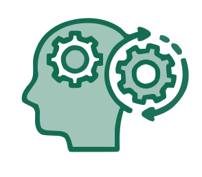
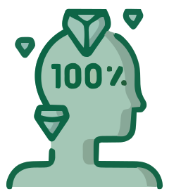

DIDIER HARDY
EN IT
HOSPITALIER
DE PROJETS
MÉTIER & IT

PROFIL PROFESSIONNEL
ICT Business Analyst | Expert Business Intelligence & Processus Métiers
Fort d'une double expertise technique et fonctionnelle bâtie sur plus de 35 ans de carrière IT, je traduis les besoins opérationnels en solutions applicatives et stratégiques innovantes.
- Analyse Métier & Spécifications :Ingénierie des exigences, modélisation des processus (BPMN, UML), rédaction de cahiers des charges et maquettage (Mockups).
- Business Intelligence & Data : Conception de rapports et dashboards d'aide à la décision (Power BI, QlikSense, Tableau, SQL Server, Crystal Reports).
- Intégration & Alignement Stratégique : Alignement des architectures logicielles (ERP/MRP, CRM) avec les objectifs de l'entreprise, maîtrise des méthodologies de projet (Agile/SCRUM, PMI, ITIL) et conduite du changement.
EXPÉRIENCE PROFESSIONNELLE
Informaticien – Laboratoire clinique | CHR Citadelle – Liège
IT Manager | Britte-Mustad – Vivegnis
IT Manager | Lanaform – Sprimont
IT Project Manager (Consultant) | Brainstorming – Ans
IT Manager / Logistic Manager | Jac Group – Sclessin
IT Project Manager (Consultant) | TC2S-CCS (Synchrosoft) – Herstal
IT Project Manager (Consultant) | S.I. Group – Chênéeux
IT Project Manager (Consultant) | Centric Group – Belgique / Pays-Bas
IT Project Manager | Gossedis (Enseigne SUPERBOIS) – Liège
IT Manager | Colors Concept – Liège
Analyste / Développeur | Graf Electronics Systems – Herstal
Analyste / Développeur | Beraco – Liège
Analyste / Développeur | BCom – Liège
FORMATION
Bachelier en Informatique de Gestion
IESL – Liège
A2 Électromécanique
I.P.E.S. – Herstal
FORMATIONS & CERTIFICATIONS CLÉS
- Microsoft Windows Server – Active Directory
- SQL Administration
- Crystal Reports · Power BI · QlikSense
- ITIL V3 – ISO 20000 (Auto-formation)
- ICT Business Analyst – FOREM
- Gestion de projets : PMI, Agile, Scrum
- UML, BPMN, Modélisation des données
- ERP Concepts & impacts sur l’entreprise
ATOUTS
Compréhension des enjeux métiers et stratégiques d’une organisation.

Capacité à transformer les besoins en solutions efficaces.
Disponible, à l’écoute et orienté résultats.
Veille technologique et amélioration continue.

Souci du détail et qualité du travail livré.